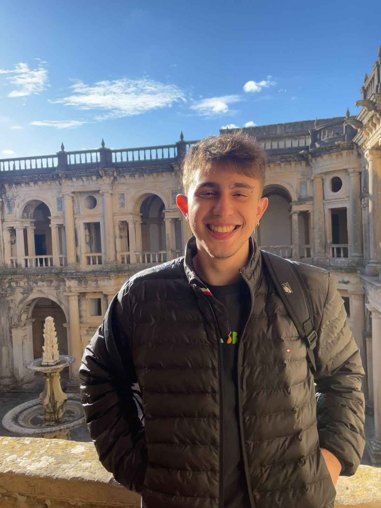

BSc, Statistics and Data Science
University of São Paulo.
Data analysis Data science Data visualization

I am a data analyst at Red Bull Bragantino working across sports analysis, from data preparation and statistical modeling to the communication of results. I hold a degree in Statistics and Data Science from the University of São Paulo and am currently pursuing a master’s degree in Applied and Computational Mathematics at ICMC-USP.
University of São Paulo.
ICMC-USP.
Prometrics.club · Curitiba, Brazil.
Red Bull Bragantino · Atibaia, Brazil.
Sports analysis, data preparation, modeling and visual communication at Red Bull Bragantino.
This area is reserved for complete case studies, each organized around its question, data, method and visual result.